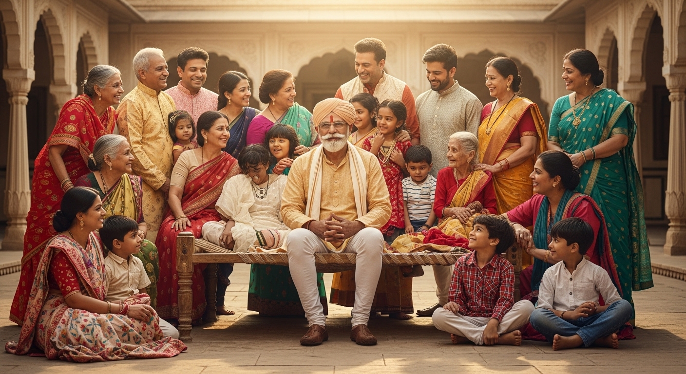
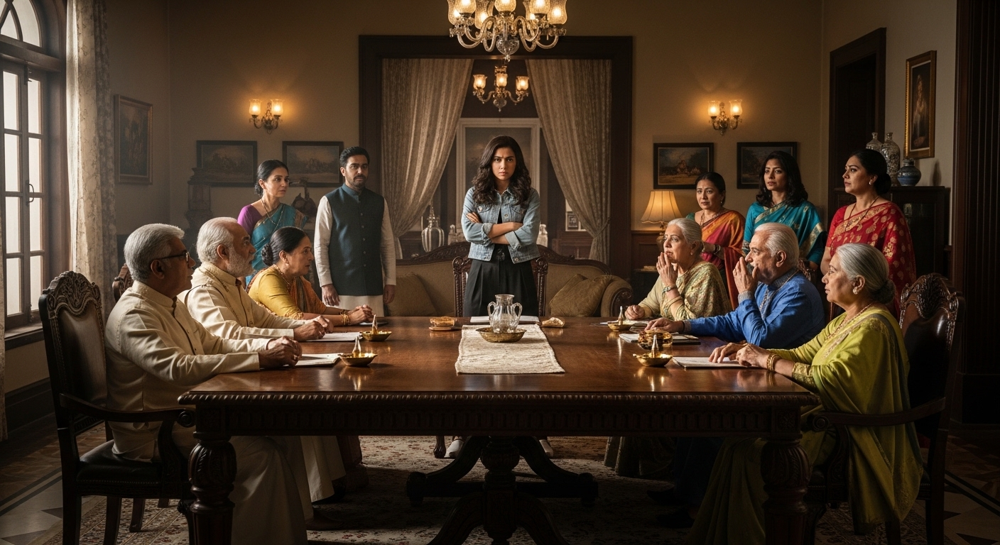

एकांकी का सारांश (Summary):
'सूखी डाली' उपेन्द्रनाथ 'अश्क' द्वारा रचित एक पारिवारिक एकांकी है। यह एकांकी 'संयुक्त परिवार'
(Joint Family) के महत्व और उसमें आने वाली व्यावहारिक समस्याओं को दिखाती है। एकांकी में एक
वट-वृक्ष (बरगद के पेड़) के समान विशाल परिवार का चित्रण है, जिसके मुखिया 'दादा मूलराज' हैं। जब परिवार में
एक पढ़ी-लिखी और आधुनिक बहू 'बेला' आती है, तो परिवार के पुराने सदस्यों (विशेषकर बड़ी बहू और छोटी बहू) से
उसका तालमेल नहीं बैठ पाता। दादाजी अपनी सूझबूझ से परिवार को टूटने ('सूखी डाली' बनने) से बचा लेते हैं।
1. एकांकीकार का परिचय (Author Introduction)
रचनाकार: उपेन्द्रनाथ 'अश्क' (Upendranath 'Ashk')
उपेन्द्रनाथ 'अश्क' हिंदी साहित्य के एक बहुमुखी प्रतिभा वाले एकांकीकार और नाटककार हैं। उन्होंने मध्यवर्गीय
समाज की पारिवारिक और मनोवैज्ञानिक समस्याओं को अपनी रचनाओं का विषय बनाया है। 'सूखी डाली' में उन्होंने
संयुक्त परिवार के मनोविज्ञान और बुजुर्गों की बुद्धिमानी (Wisdom) का बहुत सजीव चित्र खींचा है।
2. एकांकी के मुख्य पात्र (Main Characters)
- दादा मूलराज: परिवार के मुखिया। वे एक महान और अनुभवी बुजुर्ग (बरगद के पेड़ के समान)
हैं, जो पूरे कुनबे (परिवार) को एकजुट रखते हैं।
- बेला (Bela): दादा मूलराज के पोते (परेश) की नई बहू। वह बहुत पढ़ी-लिखी, आधुनिक और अमीर
घर की बेटी है। उसे अपने ज्ञान और रहन-सहन पर थोड़ा अभिमान है।
- परेश: बेला का पति और दादाजी का पोता।
- बड़ी बहू, मँझली बहू, छोटी बहू, इंदु (पोती): परिवार की अन्य महिलाएँ। ये कम पढ़ी-लिखी
हैं और बेला के तौर-तरीकों से उन्हें जलन और चिढ़ होती है।
3. एकांकी की प्रमुख घटनाएँ (Key Events)
- बेला का प्रवेश और टकराव: जब पढ़ी-लिखी बेला शादी करके इस बड़े संयुक्त परिवार में आती है,
तो वह परिवार की पुरानी परंपराओं और रहन-सहन (फ़र्नीचर, कपड़े आदि) में कमियाँ निकालती है। वह इंदु (ननद) और
घर की अन्य बहुओं को अपने तौर-तरीके सिखाने की कोशिश करती है, जिसे वे अपना 'अपमान' समझती हैं। अतः बेला और
घर की अन्य औरतों में रोज़ झगड़े (टकराव/Generation Gap) होने लगते हैं।
- दादाजी की चिंता: जब छोटी बात बढ़ते-बढ़ते दादा मूलराज तक पहुँचती है, तो वे बहुत চিন্তित
हो जाते हैं कि कहीं इस रोज़-रोज़ की खटपट से यह विशाल 'संयुक्त परिवार टूट न जाए।' दादाजी मानते हैं कि
परिवार रूपी पेड़ से अलग होकर कोई भी सदस्य 'सूखी डाली' की तरह मुरझा जाएगा।
- दादाजी का कूटनीतिक (Diplomatic) उपाय: दादाजी परिवार के सभी सदस्यों (विशेषकर बड़ी बहू और
इंदु) को बुलाते हैं और उन्हें डाँटने के बजाय एक अनोखा आदेश देते हैं। वे कहते हैं— "आज से घर का कोई भी
सदस्य बेला को कुछ नहीं कहेगा और न ही उसे कोई काम करने को कहेगा। उसे घर में पूरा सम्मान दिया जाए।"
(उन्होंने एक प्रकार से बेला का 'असहयोग/Boycott' करने लेकिन इज्ज़त के साथ, का तरीका अपनाया)।
- बेला का अकेलापन: जब परिवार के सभी लोग बेला को 'जी-जी' कहने लगते हैं और कोई उसे अपनाता
नहीं (सब उससे दूरी बना लेते हैं), तो बेला को घर में बहुत 'घुटन और अकेलापन' महसूस होता है। उसे एहसास होता
है कि बिना परिवार के प्यार और साथ के उसका सारा ज्ञान और अमीरी बेकार है।
- समर्पण और एकता (Climax): अपनी गलती मानकर, बेला रोते हुए दादाजी के पास जाती है और उनसे
माफ़ी माँगती है। वह अपने अभिमान को त्याग कर कहती है, "दादाजी! मुझे पराई मत समझिए, मैं इस पेड़ (परिवार)
की ही एक 'हरी-भरी डाली' बनकर रहना चाहती हूँ।" इस प्रकार, दादाजी की समझदारी से परिवार टूटने से बच जाता
है।
4. महत्वपूर्ण कथन (Important Quotes)
"मैं किसी भी पेड़ से टूटकर अलग हुई सूखी डाली को पसंद नहीं करता।"
= दादा मूलराज का यह कथन संयुक्त परिवार की एकता का प्रतीक है। वे नहीं चाहते कि परिवार का कोई भी सदस्य अलग होकर
अपना वजूद खो दे।
"दादाजी, मुझे इस पेड़ से अलग न करें। मैं सूखी डाली नहीं बनना चाहती।"
= बेला का यह कथन उसके अहंकार के टूटने और परिवार में घुल-मिल जाने की इच्छा को प्रकट करता है।
5. एकांकी का उद्देश्य (Theme)
- संयुक्त परिवार का महत्व (Value of Joint Family): एकांकी यह बताती है कि एक बड़ा
परिवार एक विशाल वट-वृक्ष (Banyan tree) के समान होता है, जहाँ सब मिलकर सुख-दुःख सहते हैं। अकेले (सूखी
डाली) रहकर इंसान कभी सुखी नहीं रह सकता।
- बुजुर्गों की समझदारी: दादाजी ने बिना किसी को सज़ा दिए या घर से निकाले, अपनी समझदारी
और मनोवैज्ञानिक तरीके से परिवार की कलह (झगड़े) शांत कर दी। घर के बड़े-बुजुर्गों का अनुभव परिवार को
बाँधे रखता है।
- अहंकार का त्याग: बेला की आधुनिकता और शिक्षा तब तक बेकार थी जब तक उसमें 'अहंकार' था।
सच्ची शिक्षा वह है जो परिवार को जोड़े, न कि तोड़े।

6. परीक्षा उपयोगी प्रश्न-उत्तर (Practice Zone)
प्रश्न 1: एकांकी का शीर्षक 'सूखी डाली' क्या अर्थ रखता है (प्रतीकार्थ स्पष्ट कीजिए)?
उत्तर: 'सूखी डाली' एक बहुत ही सशक्त प्रतीक (Symbol) है। इस एकांकी में
एक 'संयुक्त परिवार' की तुलना एक 'विशाल वट-वृक्ष (बरगद के पेड़)' से की गई है। जैसे पेड़ की जो डाली मुख्य
तने से टूटकर अलग हो जाती है, वह सूखकर निर्जीव (बेकार) हो जाती है (सूखी डाली बन जाती है); उसी प्रकार जो
व्यक्ति अपने 'संयुक्त परिवार' से लग होकर अपनी मनमानी करना चाहता है, उसका समाज में कोई सम्मान और वजूद
(अस्तित्व) नहीं रहता और वह जीवन के अकेलेपन में मुरझा जाता है। दादाजी नहीं चाहते थे कि उनके परिवार का कोई
भी सदस्य (विशेषकर बेला या परेश) परिवार से अलग होकर 'सूखी डाली' बने।
प्रश्न 2: बेला का परिवार के अन्य सदस्यों के साथ तालमेल क्यों नहीं बैठ पा रहा था?
उत्तर: बेला एक बहुत ही पढ़ी-लिखी (ग्रेजुएट), आधुनिक विचारों वाली और
संपन्न घराने की लड़की थी। जब वह शादी करके दादा मूलराज के रूढ़िवादी और संयुक्त परिवार में आई, तो उसे अपने
ज्ञान और मायके की अमीरी का बड़ा 'अभिमान' (घमंड) था। वह घर के पुराने तौर-तरीकों, फ़र्नीचर, और रहन-सहन में
कमियाँ निकालती थी। वह अपनी ननद (इंदु) और घर की अन्य बहुओं को अज्ञानी समझकर उन्हें अपने आधुनिक तौर-तरीके
सिखाने की कोशिश करती थी। घर की अन्य औरतें (जो कम पढ़ी-लिखी थीं) बेला की इन बातों को अपना 'अपमान' समझती
थीं और उन्हें बेला से ईर्ष्या (जलन) होने लगी। इन्हीं कारणों (तथा Generation Gap) से बेला का परिवार में
किसी के साथ तालमेल नहीं बैठ पा रहा था।
प्रश्न 3: दादा मूलराज ने परिवार को टूटने से कैसे बचाया?
उत्तर: दादा मूलराज एक अत्यंत अनुभवी और बुद्धिमान मुखिया थे। जब उन्होंने
देखा कि बेला के कारण परिवार में रोज़ झगड़े हो रहे हैं और परिवार टूट सकता है, तो उन्होंने डाँट-डपट का
रास्ता नहीं अपनाया। उन्होंने समझदारी (मनोविज्ञान) से काम लिया। उन्होंने घर के सभी सदस्यों को बुलाया और
सख़्त हिदायत दी कि "आज से कोई बेला को कुछ नहीं कहेगा, न ही उसे कोई काम करने को कहेगा, बल्कि सब उसे पूरा
'सम्मान' देंगे।"
इस अप्रत्यक्ष असहयोग (Boycott) का नतीजा यह हुआ कि बेला परिवार में बिल्कुल 'अकेली और पराई' पड़ गई। जब कोई
उससे बात ही नहीं करता था, तो बेला का घमंड टूट गया। उसे एहसास हुआ कि बिना अपनों के प्यार के उसका ज्ञान
व्यर्थ है। इस तरह, दादाजी की एक स्मार्ट चाल (समझदारी) ने बेला का हृदय परिवर्तन कर दिया और परिवार को
टूटने से बचा लिया।